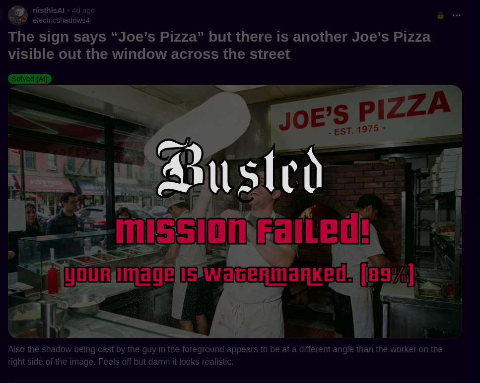
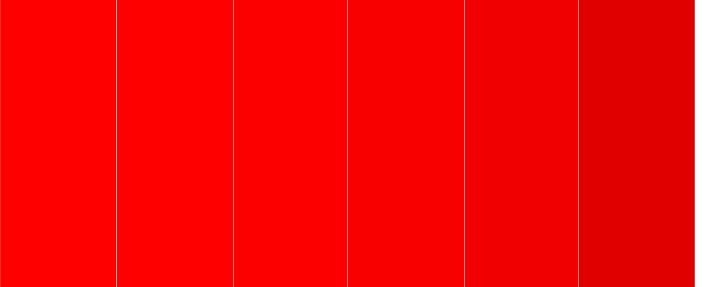
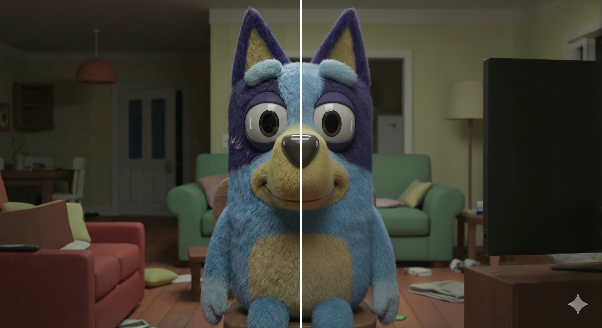

Attempting model extraction of Google DeepMind SynthID (Image) Watermark Detector and exploring adversarial machine learning attacks against SynthID
Some time ago, prior to taking the NVIDIA Exploring Adversarial Machine Learning course, I read about Google DeepMind’s Synth-ID, an interesting technology that aims to add invisible watermarks to generative AI text and images. I was intrigued about the Image watermarking aspect since it claimed to be invisible and could resist certain image modifications like adding filters, changing colours, and saving with various lossy compression schemes. This reminded me of the steganography CTF challenges which basically are challenges that hide data inside images by modifying the least significant bits of an image (ie. the bits that have the little effect on each pixel). By doing so, you can hide data inside images without any visible modifications on the image itself.
I was also speculating that given enough data, you could probably recreate a local model to do the validation. At the time I didn’t know where to find the data and I didn’t know about offline model attacks in Adversarial Machine Learning (AML) which I learned during the NVIDIA course.
After the course, I knew a lot more about it and was even more interested. I thought it would be epic to create a surrogate model to attempt attacks against it and see if they are effective against the real Synth-ID model. If you want to skip straight there, skip to the Surrogate Model section. Here’s a quick taste of what’s to come:

Before we get to the surrogate model, I’ll start by exploring and recreating some of the attacks against Synth-ID.
What sort of watermarks or identifiers are added to each image?
The visible watermark
The first watermark we all know about is the little Gemini Star placed in the bottom right corner of the image. It’s very easily identifiable:

This watermark means two things, you generated the image with Gemini/Nano banana AND you generated the image via the web interface. API generated images do not have this watermark.
The metadata identifiers
If you try read the exif metadata from the image, you’ll realise there is a lot of information in there, including potential signatures, identifiers, etc. I didn’t look too much into this because I didn’t think it was particularly interesting at the time and because removing it is trivial. Also, a lot of images you’ll see online usually have their metadata stripped to reduce file size, hence I’m not focusing on this for this initial research.
However, I do believe that some of these are significant identifiers and could be used to map the image to whoever generated it.
You can see an example image below:

The hidden watermarks
The last watermark is the invisible watermark. Hidden in the image itself in a way that is hard to detect but easy to validate. This is the watermark we’re trying to attack.
Saying the watermark is “invisible” is an exaggeration. The watermark is very hard to see but there are some edge cases where it’s impossible to hide the watermark. If you recall what I mentioned about steganography, you might have caught on to where I’m going with this.
Imagine you’re playing hide and seek in an empty square room that is painted all white. If you wear clothes that match the colour of the walls you might be harder to notice but you’ll still have a hard time hiding. We can use the same approach to identify hidden watermark patterns!
We’ll provide an image in a single colour and ask Gemini to hide the watermark in there without changing anything else. In doing so, we’ll be able to see any changes made to the image even if they are super small transformations (ie. Least Significant Bit modifications) because they will contrast greatly with the background colour we set.
I’m using a square image where every pixel is black and I’ve asked Gemini to remake it without modifying anything (probably the most boring task it received today):

From there, I took both images and decided to compare them to extract the delta for each pixel value and plot that. You can see the delta for the Red-Green-Blue (RGB) channels as well as a heat map of the combined deltas and some distribution graphs I’ll explain below:

Note: the image was cropped to remove the Gemini star in the bottom right to make it easier to read the graphs and understand what is going on.
The watermark is very obvious when extracted and graphed like this. However, if we look at the actual data, we realise that the watermark is hidden in the 2 Least Significant Bits (LSB) of each pixel in the image. Now what does that mean?
Each pixel of an image has 3 values, the 3 Red Green Blue (RGB) channels that define the colour of that pixel. Each channel has a value between 0 and 255. The higher the value, the more visible that colour will be in the pixel. For example, if we want a full red pixel, we’ll use an RGB value of (255, 0, 0) (ie. 255 Red, 0 Green, 0 Blue):

White is 255 on each channel and Black is 0 on every channel.
The values are represented in base 10 (ie. what we’re used to). But we can convert this to its binary representation (ie. base 2). For example, 255 in base 10 is 11111111 in base 2 (ie. the binary representation). In binary, each 0/1 value is a bit so when we talk about the Least Significant Bit we’re talking about the bit which has the least impact on the final value. In the case of 255, this means the bits that are the most to the right: 11111111 <- the bits on this side because changing this doesn’t change the value as much as the bits on the left side:
11111111->25511111110->25411111100->25211111000->24811110000->24011100000->22411000000->19210000000->12800000000->0
As you can see from above, if we change the last 2 bits the value barely changes. Going back to our red pixel, if we change the value from 255 to 254 or 252, it’ll be very hard to notice any changes. Try to see if you can find where the different reds start and finish in the palette below:
If you managed to identify 3 different reds, congratulations… You already have hawk eyes! But otherwise you can see the different reds here. I started at a value of 255, toggling the rightmost bits one by one until I reached a value of 224:

As you can see, there’s basically no noticeable difference between the first 3 reds (at least I don’t see it). And this is why modifying those bits (to for example hide data) has very little effect on the overall image which is what steganography uses and what SynthID also does as we saw above.
From the data we collected, we can see the highest delta value was 12. This seems arbitrary but if we remember that data is hidden in each of the color channels, we realise that there’s basically 2 bits per channel used to hide the watermark:
Each channel:
- 2 bits
- lowest delta = 0 (ie. 00 in binary)
- highest delta = 4 (ie. 11 in binary)
Total max delta = 12And this is basically how the watermark is hidden inside the image.
You might have noticed in the graphs above, the max delta for blue and green appear to be higher than 4. (ie. more than 2 bits). Synth-ID uses more than 1 watermark method which I believe is why we get a delta higher than 4. Alternatively, it could be the “secret” that they mention in their article, basically an identifier hidden in the image (notice the distortions in the watermark above).
I looked into more analysis methods such as Fast-Fourier Transform (FFT) which looks at the Frequency channel of images. I won’t go through all the various image analysis I did otherwise we’ll never get to the model extraction part. You can look at it in the Appendix 1: FFT analysis for further analysis. There’s also another researcher who identified a few interesting image patterns via statistical analysis on the 150k Nano Banana Dataset.
Removing the basic identifiers
Now that we understand the watermark system a bit more, we can look at attack Synth-ID. We’ll start with what probably most people want to do. How do we remove the watermarks?
Removing the visible watermark
There’s a great article explaining how to “reverse” the Gemini star watermark using reverse alpha blending. I highly recommend the read, I’m not going to explain how it works, you can just read the article.
There’s plenty of tools online, I decided to use this one at random which basically does this:

This removes the visible watermark but there’s still hidden watermarks which are still there and can be detected by Synth-ID:

Removing the metadata identifiers
We can also try to remove the metadata from the image to see if that has any effect on Synth-ID’s analysis.
We can use mogrify from imagemagick to remove the image metadata:

Warning
exiftool -all:all= usually works well for most files but I’ve just realised that it didn’t work in this case. Seems to be only valid for JPEG images. Beware.
Unfortunately, this doesn’t do anything and our image still gets caught…
Looking into adversarial attacks
We just saw that removing the basic identifiers doesn’t do much which we could have predicted based on our hidden watermark analysis. Let’s look at more interesting attacks and see what can be done to bypass it. We’ll use the attacks described in the original DeepMind Synth-ID article.
Simple adversarial attacks
(Universal) adversarial examples These are inputs with small, often imperceptible, perturbations designed to cause misclassification (Szegedy et al., 2014; Carlini and Wagner, 2017b). For watermarking, they can be used to make the decoder fail (removal) or fire incorrectly (forgery). While defenders aim for invisibility, attackers may tolerate visible artifacts, making attacks easier (Brown et al., 2017).
Zeroing out Least Significant Bits (LSB)
We know some of the watermarking data is stored in the LSB of the images. Let’s try to zero out the Least Significant Bits from the image and see if we can bypass the Synth-ID check. You can see here the degradation for every LSB we zero out (the gif has 4 images with 0 bit changed, 1 bit changed, 2 bits changed and 3 bits changed):
Unfortunately, even the image with 3 LSB zeroed out did not fool SynthID:

Randomizing Least Significant Bits (LSB)
Since zeroing didn’t work, I had little faith in randomizing the LSB and it obviously failed even with 4 LSBs modified:

Attempting to forge a watermark
As an alternative, I wanted to see if we could trick the model into thinking it watermarked an image it didn’t. I asked ChatGPT to create a fluffy boy and it came up with this which is perfect and so adorable:
I then wrote a quick script to copy the delta mask from the black square analysis we did earlier and placed it on the image above. Again. Synth-ID wasn’t fooled:

This shows the model is quite robust and hard to trick. Also hints at something mentioned previously, the model doesn’t solely rely on LSB. There are other artefacts in the image that are used to identify whether this was generated with Nano Banana or not. We’ll look at more targeted attacks next.
Regeneration Attacks
These attacks use other powerful generative models (like diffusion models) to reconstruct a watermarked image, potentially washing out the watermark in the process (An et al., 2024; Zhao et al., 2024).
In this attack, we can task a diffusion model to basically re-generate the image itself. This works as long as the model reprocesses the image and performs de-noising, removing some of the more subtle watermark signals. You essentially get a slightly different image than originally produced by Nano Banana.
There’s a few tools already available on Hugging Face but the most interesting one I found was the following ComfyUI workflow by 00quebec. The examples provided are really good. You can still see the difference and lower quality image (look at the wooden floorboards):

I decided to try it out with our trusty Bluey image and got some good result but you can clearly see the loss in quality/detail between the two images:

Less details but at least we finally managed to bypass the SynthID Watermark check:

Note: I also left the Gemini watermark and it didn’t care about it.
We now have our first working attack against Synth-ID using regeneration!
Surrogate models
Since adversarial examples often transfer between different models, an attacker can train a local substitute model to craft attacks in a black-box setting (Papernot et al., 2017; Tramèr et al., 2016).
When I started analysing the hidden watermarks in Synth-ID generated images, I dreamed of having enough data to be able to create a surrogate model. I thought I would have to find a way to scrape data and validate it before attempting to train a model. However, when I landed on aloshdenny’s analysis which was using a 150K image dataset, I realised there was probably something for me to use.
Selecting datasets to train on
After some digging, I found the following research where they released a 150k Nano Banana image dataset and after testing a few of them, I realised they did in fact have the Google Synth-ID watermark!
This meant we had a decent dataset to start with. The dataset consists of approximately:
- 123k watermarked images
- 5k clean images
Obviously that’s way too skewed to train on since the model could learn to always say watermarked and it would be right over 95% of the time!
As such, I decided to supplement it with a dataset of 123k clean images: https://huggingface.co/datasets/bitmind/MS-COCO-unique
Training a model
Note
I’m not a machine learning expert so I did some research and came up with a setup that sounded interesting at the time. Having a better understanding of the watermarking system now, I believe there are much better approaches to this which I’ll explore in the future. Nevertheless, for an alpha version 0.1, I’m happy with the outcome!
For the model, I trained a dual-stream Convolutional Neural Networks (CNN) binary image classifier. (That’s a lot of complicated words) But to make it simple, it’s a neural network to classify images (watermarked or not) that looks at both the spatial branch (ie. RGB channels and grayscale of an image) and frequency branch that processes frequency domain features (ie. the hidden patterns, FFT, etc).
The spatial branch is built on a ResNet-34 backbone, a pre-trained model used for image classification that is quite good at understanding subtle patterns/signals.
The reason I chose this setup is because of the analysis I did on the hidden watermarks which pointed to visible domain patterns as well as frequency patterns (ie. FFT patterns), which was also highlighted by other research work discussed in earlier sections. If you’re interested, here’s another good read on Spatial and Frequency Domain.
I’m sure this isn’t the ideal setup and it might be interesting to look at other domains or optimisations but as you’ll see below, it seems to work quite well for Synth-ID identification! The article also suggests watermark is content-dependent (tied to the image, not a fixed pattern) which means its likely that there’s more optimal solutions here.
Armed with my 250k images and my duct tape model setup, I rented a bunch of GPUs on vast.ai. I don’t actually remember the exact specs I rented but I can tell you it was not H100s because for around 8h of usage, I paid less than 2.50$:

It didn’t take 8 hours to train the model either… I actually messed up the first time around (might have over-fit slightly…) and forgot to turn off the instance for a while! Next time I’ll probably do a much longer session with a larger dataset!
You can see an extract of the training output below. You can see after 9 epochs it correctly identifies 100% of the images which means…. yeah its probably over-fit. What’s also interesting is that even after 1 epoch of training it achieves 99% detection… which doesn’t seem right. However, I still decided to let it run and after some more out of dataset testing, I found that epoch 8 produced a model that was quite good at identifying watermarked images:
(main) root@C.31020183:/workspace$ torchrun \
--nproc_per_node=4 \
/workspace/model/train.py \
--distributed --pretrained \
--backbone resnet34 --freeze-stages 2 \
--unfreeze-epoch 5 --clean-dir dataset/input \
--watermarked-dir dataset/output --output artifacts/model_pretrained_ddp \
--lr 2e-4
[...]
Dataset sizes -> train: 200911 | val: 50227 | channels: 6
Epoch 001 complete. Running validation...
Epoch 001 | train_loss 0.0356 | val_loss 0.1020 | val_auc 0.9938
Saved new best checkpoint to artifacts/model_pretrained_ddp/best.pt (AUC 0.9938)
Epoch 002 complete. Running validation...
Epoch 002 | train_loss 0.0244 | val_loss 0.0780 | val_auc 0.9962
Saved new best checkpoint to artifacts/model_pretrained_ddp/best.pt (AUC 0.9962)
Epoch 003 complete. Running validation...
Epoch 003 | train_loss 0.0203 | val_loss 0.0724 | val_auc 0.9970
Saved new best checkpoint to artifacts/model_pretrained_ddp/best.pt (AUC 0.9970)
Epoch 004 complete. Running validation...
Epoch 004 | train_loss 0.0168 | val_loss 0.0583 | val_auc 0.9981
Saved new best checkpoint to artifacts/model_pretrained_ddp/best.pt (AUC 0.9981)
Unfroze spatial backbone at epoch 5
Epoch 005 complete. Running validation...
Epoch 005 | train_loss 0.0184 | val_loss 0.0652 | val_auc 0.9974
Epoch 006 complete. Running validation...
Epoch 006 | train_loss 0.0088 | val_loss 0.0201 | val_auc 0.9998
Saved new best checkpoint to artifacts/model_pretrained_ddp/best.pt (AUC 0.9998)
Epoch 007 complete. Running validation...
Epoch 007 | train_loss 0.0041 | val_loss 0.0164 | val_auc 0.9998
Saved new best checkpoint to artifacts/model_pretrained_ddp/best.pt (AUC 0.9998)
Epoch 008 complete. Running validation...
Epoch 008 | train_loss 0.0032 | val_loss 0.0046 | val_auc 0.9999
Saved new best checkpoint to artifacts/model_pretrained_ddp/best.pt (AUC 0.9999)
Epoch 009 complete. Running validation...
Epoch 009 | train_loss 0.0025 | val_loss 0.0047 | val_auc 1.0000
Saved new best checkpoint to artifacts/model_pretrained_ddp/best.pt (AUC 1.0000)Below you can see some of the out of training set tests ran at different epoch. The two images I test against vastly different content, one is an image of a person and the other is an image of a new tab in a web browser. Both have the Synth-ID Watermarked but the watermark features are more prominent on people than inanimate or virtual objects which is why the second is always harder to catch.
The epoch 6 model doesn’t pick up the web browser watermarked image but identifies the model image easily:

The epoch 8 model identifies the human, the browser tab and marks the flux generated image as clean:

The epoch 9 model is a little overfit and does not identify the web browser watermarked image:

I know this is a bit ad-hoc and I should have made another bigger validation dataset on top of the testing/validation dataset used for training for it to be more thorough. However, I didn’t have the credits to spend on a large dataset and I found another way to validate my Model as you’ll see in the next section.
Using our local model to identify Synth-ID watermarked images online
When I started testing the model, I wanted to see if other peoples images could be picked-up as AI generated. The header image was hinting at this so you might have guessed… But yes, I turned to Reddit and more specifically to 2 sub-reddits:
I was scared at first that the model wouldn’t pick up any of the images posted online… To my surprise, it was a bloodbath!
Testing the model against /r/nanobanana
Obviously, /r/nanobanana had nearly only Gemini generated images (ie. watermarked) and the model didn’t take long to identify the majority of them! For testing, I download all images from the top 100 posts of all time on that subreddit and ran the model against all of them, here’s a peek of the results:

At first I thought sure it seems to pick up stuff but even for a subreddit dedicated to Nano Banana generated images this is a lot… Maybe it just answers WATERMARKED to everything?
And then while scrolling the subreddit, I came across this Reddit post which had 3 images, 2 of which were clean images that the user combined to make a 3rd image (the Nano Banana watermarked image). The user was asking for tips on how to make the AI generated apron look better:

Now I thought this was a perfect example because apart from the apron the first and last image look very similar so you’d think if the model picked up images with humans as watermarked images than it would think both the first and last image were watermarked, except it correctly identified both the first and second image as clean and the last image as watermarked:

Note
It’s obviously not perfect and some of the watermarked images were marked as clean which show potential improvements but as a first run, I’m very happy with the outcome!
Testing the model against /r/isthisai
Now, the bigger test. Can it correctly identify a Nano Banana Generated Image that people had a hard time identifying… The /r/isthisai subreddit basically allows people to submit images they believe could be AI and humans try to identify abnormalities which could indicate GenAI.
As previously, I did the same for /r/isthisai and pulled the images from the top 100 posts. My thought process here was, if my model was actually good it would pickup any watermarked posts which I could then validate with Synth-ID in Gemini. To be fair, I was really not confident this would work because the photos posted there are screenshots or cropped and what not so I thought the model wouldn’t pick up on those. All images had low probabilities EXCEPT for one image which was clearly marked as WATERMARKED:

This was the image in question, and you can see people discussed it and marked it as AI based on weird things in the image:

However, we don’t care about the image content itself, we care about the hidden watermark which we believe exists. To validate our finding, we can simply use the Synth-ID Application in Gemini and we see the model predicted correctly:

Edge cases
The model was trained on full sized images without any modifications, contrary to the official Synth-ID model, hence things like compositions or cropped images might get caught or would receive a lower ranking.
However, the model still seems to pick up signs of watermarks. Take for example the following image composition of 4 generated images:

The threshold is arbitrary but based on testing, when given a clean image, the model is pretty adamant about it being clean and will return a probability under 5%. Hence, a 48% probability likely means it picked up the watermark from the image:

Attacking my own local model
Now that I had a surrogate (offline) model, I wanted to see if I could fool it by using Adversarial Machine Learning as I learned in the NVIDIA Exploring Adversarial Machine Learning course I took recently. I decided to use the Adversarial Robustness Toolbox (ART) and selected Carlini & Wagner L2 (C&W L2) as my attack of choice. It took about 5 minutes but from the Watermarked girl with apron image we saw earlier, it created an adversarial image that evaded the model:
(main) root@C.31020183:/workspace$ python model/attack_art.py \
--checkpoint epoch8.pt \
--image apron.png \
--output adv.png \
--size 512 \
--max-iter 200 \
--confidence 0.1 \
--lr 0.01
C&W L_2: 100%|███████████████████████████████████████████████████████████████████████████████████████████████████████████████████████████████████████████████████████████| 1/1 [05:15<00:00, 315.62s/it]
Saved adversarial image to adv.pngIt took a while to run but finally succeeded. You can see our model is completely fooled here:

We can compare the two images to identify the perturbations that were added (which look super interesting!):

You can see the mean delta is small which means each RGB value didn’t change by much but the amount of pixels modified is huge (96%). If you look carefully, you’ll also notice interesting wave patterns around the subject. I’m not exactly sure if it’s related to the watermark or not but it looks awesome!
Attempting to replicate the attacks against the online model
Attacking our local is great and fun but now we have to fool the overlord, the one and only, Papa SynthID Validator (ie. the real online version). So, I did what I had to do… I submitted my adversarial image to Gemini and asked it to check the image using SynthID which it obliged. I looked at that animation spin and spin and spin. And then it came back with the verdict:

Unfortunately, the force was too strong in this one and SynthID did end up identifying the watermark. I know you were nearly fooled Mr. Synth! Its only a lost battle, I’ll fool you in the next one, don’t you worry!
I did try other attacks but they didn’t work either. I’ll have to improve the surrogate model first using a more broad training dataset, including some adversarial hardening and then try this again!
Conclusion
This project was a great hands-on learning experience that tied together several domains: steganography, adversarial machine learning, and model extraction.
Here are the key takeaways:
- SynthID is well-engineered. Simple attacks like zeroing or randomizing LSBs, removing metadata, or naively copying watermark patterns all failed. The watermark doesn’t rely on a single technique; it uses multiple embedding methods across both spatial and frequency domains (and more), making it resilient to surface-level tampering. Understanding why these attacks fail taught me more about the system than reading the paper alone.
- Regeneration attacks work, but at a cost. Using a diffusion model to reconstruct the image was the only attack that successfully bypassed SynthID. The trade-off is visible quality degradation, which makes it impractical for many use cases. This reinforces an important AML concept: attack success often comes with a quality/utility penalty.
- Surrogate models are surprisingly accessible. With a publicly available 250k image dataset and under $2.50 in GPU rental, I managed to train a dual-stream CNN that could accurately detect SynthID watermarks even on unseen Reddit images. The barrier to building a local detector is much lower than expected, which has implications for both research and the long-term effectiveness of watermarking as a trust signal.
- Adversarial transferability is hard. While C&W L2 attacks successfully fooled my surrogate model, they did not transfer to the real SynthID validator. This gap highlights that my surrogate, despite good detection accuracy, hasn’t captured enough of the internal decision boundary of the real model. Closing this gap is the next challenge. Better training data, adversarial hardening, and architecture improvements should help.
- The NVIDIA AML course paid off. Before the course, I had the intuition that model extraction might be possible but didn’t know the methodology. Concepts like surrogate model training, adversarial example generation, and attack transferability gave me the framework to actually attempt it. Going from theory to a working (if imperfect) attack pipeline in a few days was incredibly rewarding.
Model release
I believe this is the first model attempting to replicate Google SynthID Image Watermark Detection. There’s a few attempting to implement SynthID Text Watermark detection but none for images:

I’ve released the model if you’re interested in testing it out. You can find it on huggingface with example inference code:
https://huggingface.co/fyxme/opensynthid-detect-0.1
I will cleanup and release the training code in the upcoming few days and will update this post once the full training code is available.
Future Research & Improvements
I was not able to fool Synth-ID this time but hopefully with more training data and a better model architecture, I’ll be able to attack the local surrogate model and this attack will also fool the real DeepMind Synth-ID Image verification model.
Some ideas of things to improve on:
- More diverse testing dataset including more watermarked images and more clean images
- Improved dataset with perturbations/modifications and adversarial hardening
- The issue with the current dirty dataset is that its multiple modifications stemming from 1 image, need to dilute it more so it doesn’t pick up on things only from that
- Alternate model architecture, more adapted to invisible image channels
References
- https://deepmind.google/blog/identifying-ai-generated-images-with-synthid/
- https://blog.google/innovation-and-ai/products/google-synthid-ai-content-detector/
- https://arxiv.org/html/2510.09263v1
- https://www.reddit.com/r/isthisAI/comments/1qw41bf/the_sign_says_joes_pizza_but_there_is_another/
Appendix
Appendix 1: FFT analysis